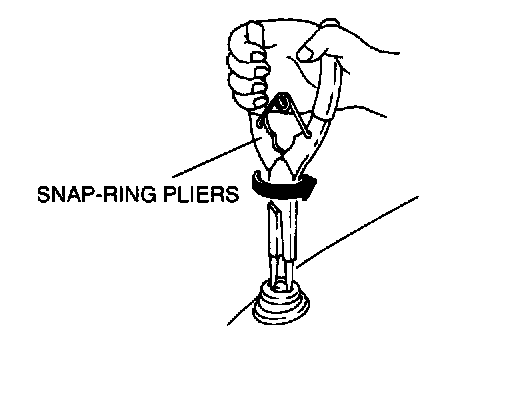

With Manual Antenna
MANUAL ANTENNA REMOVAL/INSTALLATION1. Disconnect the negative battery cable.
2. Remove the trunk side trim (LH).


3. Remove in the order indicated in the table.
4. Install in the reverse order of removal.
Mounting Nut Removal Note
- Use a snap-ring pliers to remove the mounting nut.